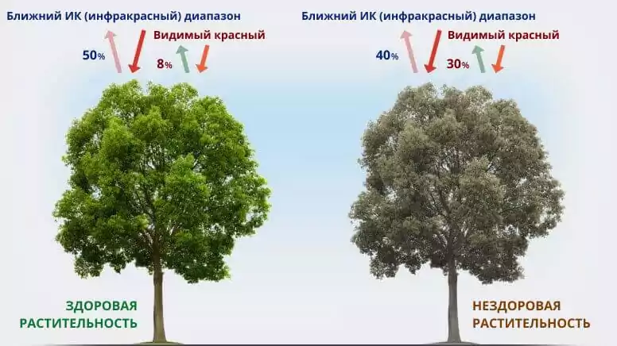
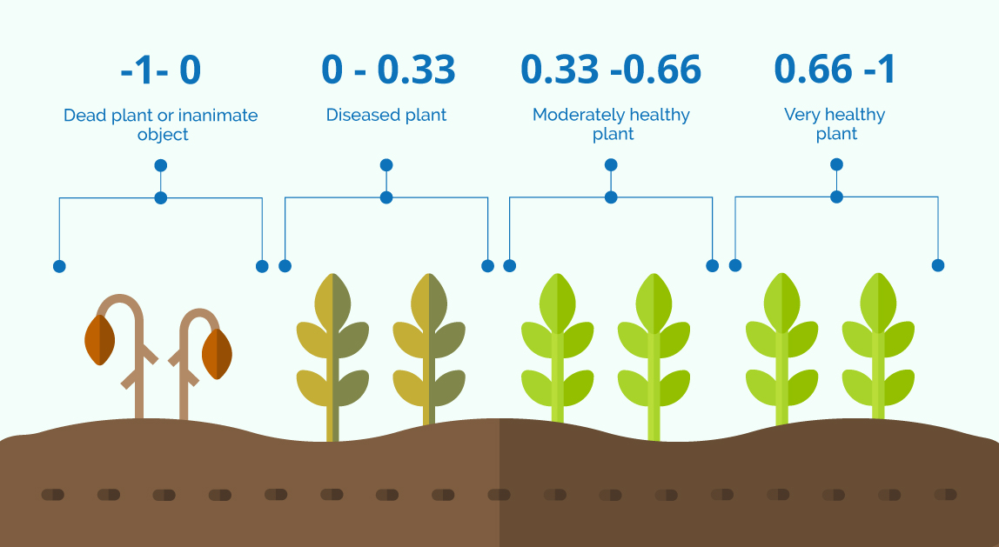
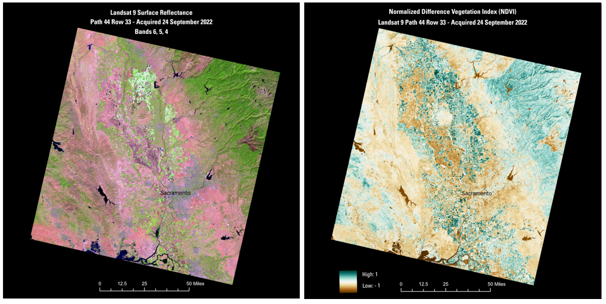
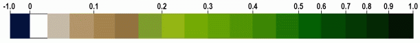

Расчет вегетационных индексов
1 Основные понятия и формулы1
Вегетационный индекс (ВИ) это показатель, рассчитываемый в результате операций с разными спектральными диапазонами (каналами) ДДЗ, и имеющий отношение к параметрам растительности в данном пикселе снимка. Эффективность ВИ определяется особенностями отражения; эти индексы выведены, главном образом, эмпирически.
Фактически вегетационные индексы как и все спектральные индексы основаны на том, что разные поверхности отражают и поглощают различные части электромагнитного спектра.
Основное предположение по использованию ВИ состоит в том, что некоторые математические операции с разными каналами ДЗЗ могут дать полезную информацию о растительности.
1.1 Нормализованные вегетационный индекс
NDVI (Normalized Difference vegetation index) - самый известный индекс и ему больше всего доверяют. NDVI прост для вычисления, имеет самый широкий динамический диапазон из распространенных ВИ, и лучшую чувствительность к изменениям в растительном покрове. Он умеренно чувствителен к изменениям почвенного и атмосферного фона, кроме случаев с бедной растительностью. Для того чтобы просто посмотреть на растительность на снимке с количественной точки зрения, нет ничего лучшего, чем NDVI, только если вы не имеете территорию с бедной растительностью.
Рассчитывается NDVI по формуле:
\[ NDVI = \dfrac{NIR - RED}{NIR + RED} \]
где \(NIR\) - значение в ближайшем инфракрасном диапазоне, \(RED\) - значение красного канала.


Интерпретация значений2:
0,15 – это самых низкий индекс, который означает, что скорее всего насаждения не смогли пережить холода;
0,15–0,2 – низкий показатель, означающий, что растения начали зимовку на слишком ранней фенологической стадии;
0,2–0,3 – это хороший результат, который указывает на то, что с растениями все в порядке и они смогут перейти к стадии вегетации;
0,3–0,5 – это самый высокий показатель.
| Тип объекта3 | Отражение в красной области спектра | Отражение в инфракрасной области спектра | Значение NDVI |
|---|---|---|---|
| Густая растительность | 0.1 | 0.5 | 0.7 |
| Разряженная растительность | 0.1 | 0.3 | 0.5 |
| Открытая почва | 0.25 | 0.3 | 0.025 |
| Облака | 0.25 | 0.25 | 0 |
| Снег и лед | 0.375 | 0.35 | -0.05 |
| Вода | 0.02 | 0.01 | -0.25 |
| Искусственные материалы (бетон, асфальт) | 0.3 | 0.1 | -0.5 |
Вегетационные индексы необходимо рассчитывать в период активной вегетации и желательно сравнивать за разные даты, чтобы получить более корректный результат.

PVI (Perpendicular VI) – несколько менее, но тоже широко распространен. Имеет узкий динамический диапазон и меньшую чувствительность и очень чувствителен к изменению атмосферы. Относительно прост в использовании и нахождении почвенной линии, что важно для использования других индексов. Иногда он лучше чем NDVI если вы имеете бедную растительность.
SAVI (Soil Adjusted VI) - хороший вариант, если цель исследования - разреженная растительность. В этом случае, если вы используете корректирующий фактор L больше чем 0.5, вы должны быть готовы к указанию статьи Huete (1988) и того факта, что корректирующий фактор должен быть больше чем 0.5, если растительный покров мал.
2 Расчет индекса NDVI
Расчет индекса можно осуществить с помощью Калькулятора растров.

Так как здесь будут использоваться снимки Landsat 8, то ближайший инфракрасный спектр - это 5 канал, а красная часть спектра - это 4 канал, которые необходимо будет подставлять в формулу выше.

Желательно сохранять результат в файл, потому что при создании временного растра расчет может быть некорректным.

Для более понятного визуального отображения растительности и прочих объектов на карте NDVI можно составить палитру самостоятельно или использовать уже готовый стиль.
Готовые стили для карт NDVI можно скачать по ссылкам:
Дискретная палитра NDVI https://disk.yandex.ru/d/JyiM2dt6uqI2KQ
Палитра NDVI https://disk.yandex.ru/d/OjWVAEtcLWt-zw
Для загрузки готового стиля необходимо открыть настройки стиля растрового слоя (либо кликнув по нему дважды левой кнопкой мыши, либо после клика правой кнопкой мыши выбрать пункт Свойства открывшегося контекстного меню). В настройках стиля следует выбрать пункт Форма - Загрузить стиль, после чего найти файл стиля и выбрать его.


Также можно использовать более стандартную шкалу, показанную ниже.

При необходимости растр можно далее переклассифицировать, чтобы получить дискретные значения, а потом векторизовать результат.
Так вы сможете оценить, например, площадь зеленых насаждений в городе.


В результате вы получите растр с дискретными значениями, вместо непрерывных, который можно легко автоматически векторизовать.

Footnotes
Вегетационные индексы - https://gis-lab.info/qa/vi.html↩︎
Зачем нужен вегетационный индекс NDVI? - https://innoter.com/articles/zachem-nuzhen-vegetatsionnyy-indeks-ndvi/↩︎
NDVI - теория и практика - https://gis-lab.info/qa/ndvi.html↩︎